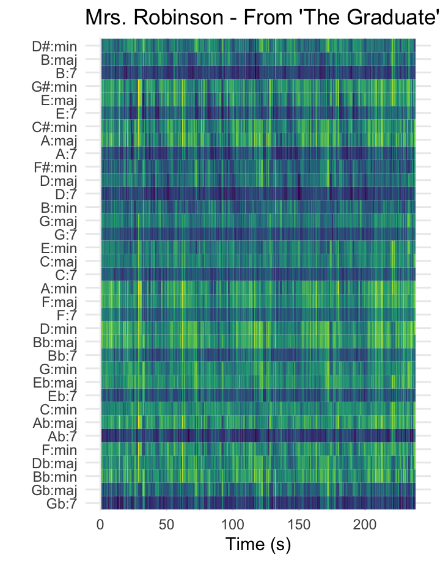
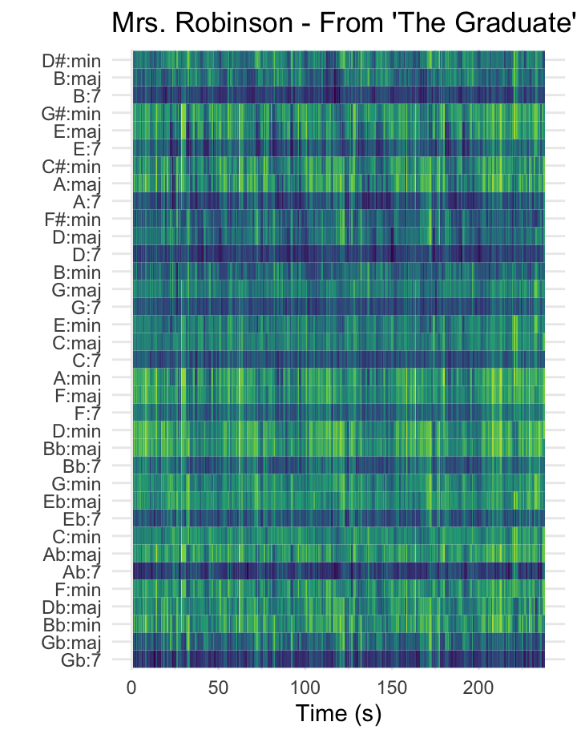
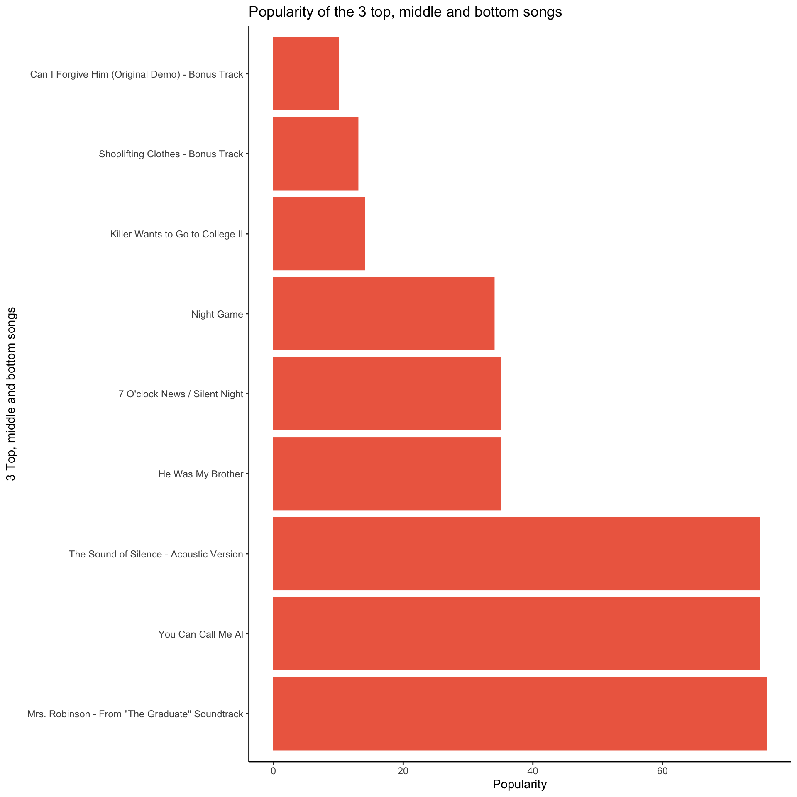
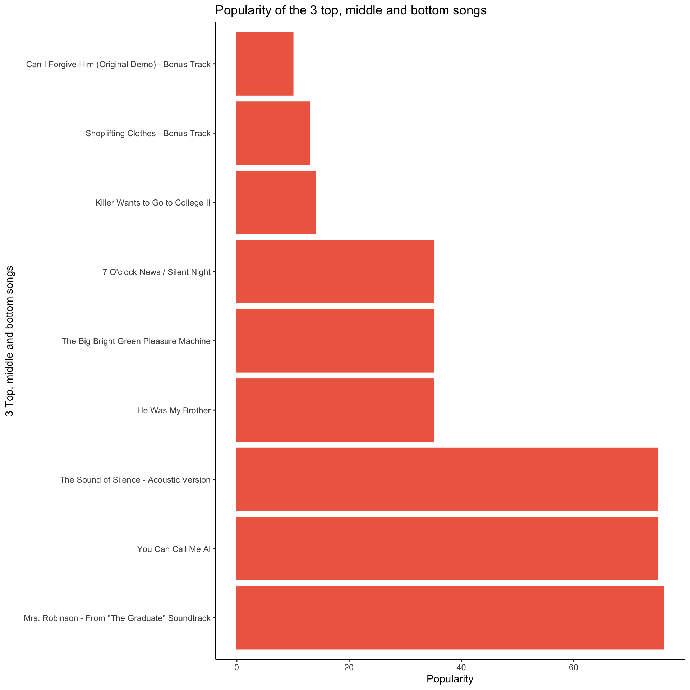
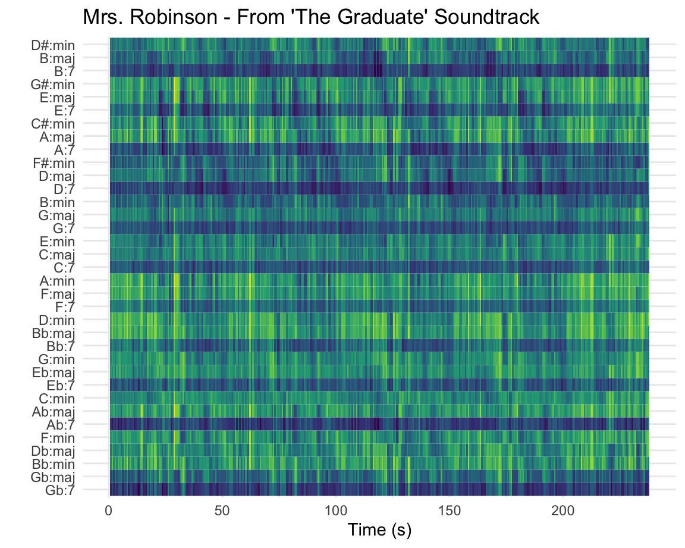

Welcome
With the information and analyses on this storyboard, I aim to investigate the ongoing reinvention of Paul Simon’s colorful variety of music.
Paul Simon grew up in a multicultural environment and has always been eager to explore new music traditions. Throughout his long career, Simon has been inspired by a lot of genres, and has applied bits of multiple traditions on the same album, even on the same songs. I want to investigate how Spotify describes his albums to see how his style has changed over time.
For this, I will investigate the albums he made in his solo career, as well as the ones he made together with Art Garfunkel for Simon & Garfunkel. I’ve added a list of these on the right side of the page.
I expect that I will find the biggest differences in audio features from the second half of his solo career, especially from Graceland on. But because Simon has always been experimenting with different styles, the results of my research could be surprising.
Identifying several tracks in my corpus as typical or atypical is difficult, because Simon’s discography is so widely diverse (which inspired this corpus :) But, in terms of his image as an American folk(rock) singer, the tracks from his Simon & Garfunkel period will be most typical, and his later solo albums most untypical, as his musical exploration only grew more and more.
Paul Simon has explained that for several songs, he took used aspects of 5 to 6 genres and musical tradition. The audio labels Spotify will give to his albums will not be as detailed as a description of Paul Simon himself. For this research I have focussed on a few specific Spotify’s features: speechiness, popularity, tempo, timbre pitch classes, chords and keys.

My corpus consists of 19 studio albums:
Simon and Garfunkel
- Wednesday Morning, 3 A.M. (1964)
- Sounds of Silence (1966)
- Parsley, Sage, Rosemary and Thyme (1966)
- Bookends (1968)
- Bridge Over Troubled Water (1970)
Solo career
- The Paul Simon Songbook (1965)
- Paul Simon (1972)
- There Goes Rhymin’ Simon (1973)
- Still Crazy After All These Years (1975)
- One-Trick Pony (1980)
- Heart And Bones (1983)
- Graceland (1986)
- The Rhythm Of The Saints (1990)
- Songs From The Capeman (1997)
- You’re The One (2000)
- Surprise (2006)
- So Beautiful or So What (2011)
- Stranger To Stranger (2016)
- In The Blue Light (2018)
- Seven Psalms (2023)
Speechiness in Paul Simon’s discography
Here you can see the mean amount of speechiness per Paul Simon Album. (I am not sure how this will add to my research on his reinvention but I needed a way to practice making plots first :) Spotify measures speechiness from 0.0 to 1.0 (I’ve multiplied the results by 10). The mean speechiness of the album Bookends is above 10, which is probably the result of an error that I have to look into. I do know that Bookends has a track called ‘Voices of Old People’, which only consists of snippets of interviews Art Garfunkel did with the elderly in a retirement home and doesn’t contain any music. This could be a reason for the error.
Discography arranged by popularity

I want to see if there is any variety in tonality across Paul Simon’s most popular, mid popular and least popular songs. For this I will investigate the chroma features (pitches) of the three top songs, three middle songs and three bottom songs in Paul Simon’s discography. On the left you can see a graph in which the popularity rate of these nine songs is displayed. It’s interesting to see that his 3 least popular songs are all from his album Songs From The Capeman, which he wrote for his musical The Capeman.
Chromagrams and cepstrograms for each song



On this page the chromagrams as well as the cepstrograms for all nine top, middle and bottom songs are displayed.
We can see that for the three most popular songs of Paul Simon, the tonality is quite clear (Mrs.Robison is in F#, You Can Call Me Al in C and The Sound of Silence in F#). It’s interesting to see that for the middle and bottom songs, the tonality is much less clear.
For most of the songs of the list the timbre consists of multiple levels, only The Big Bright Green Pleasure Machine and Night Game have fewer levels (mostly co2). So, according to these plots, Paul Simon often likes to use a lot of elements that result in a wide range of timbre. I think this is also hearable in the recordings, in which he stacks a lot of instruments, rhythms and sound snippets on top of each other, creating multiple levels of sound.
Tempo across Paul Simon’s albums
According to this boxplot, the tempi of Paul Simon’s songs differ a lot, but it could be said that most of his songs’ tempi are between 100bpm and 130bmp. You can hover over over the biggest outliers to see which songs’ tempi are extrodinary according to Spotify. It’s interesting to see that Spotify perceives He Was My Brother of the Wednesday Morning 3 A.M. album as an outlier of 200bpm (which is probably not right) but Paul Simon’s solo version of The Paul Simon Songbook not. Blessed is also an outlier of around 200bmp, I don’t think this is very correct either. On top of that, even though Still Crazy After All These Years is a slower song, it is probably not 37.1bpm. On the next page I will have a look at the tempogram of this song to see if there is anything interesting in it that may confuse Spotify.
Besides the Seven Psalms album, which is essentially one long track, the Graceland album and The Rhythm Of The Saints have a collection of songs that cover the smallest range of tempi. It is known that for these albums Paul Simon explored rhythms (and harmonies), from South African cultures (Graceland) and West African and South American cultures (Rhythm of the Saints). It is interesting to see that in this elaborate musical exploration, that was mainly focused on rhythm, he stayed within a small range of tempi.
Tempogram Still Crazy After All These Years
Even though the lines in this tempogram aren’t very clear, it could be said that the clearest tempo is around 110bpm. When listening and tapping along myself, I predict it is probably around 60bpm.
Tempograms He Was My Brother
If we squint our eyes we can see a vague (almost similar) line in the tempograms for the two versions of He Was My Brother. The tempo the line shows is more likely than the 200bpm outlier on the previous tap. The line starts somewhere around 90bpm and travels up towards 110bpm. Because the song was probably played in life, it’s not strange that the tempo had gone up a little towards the end of the song.
Tempogram Seven Psalms
Just like the other tempograms, this plot for the album Seven Psalms is quite hard to read. It also took a long time to plot, not only because it is a tempogram, but also because the song (which is actually an album consisting of one track) is 33 minutes long. You can see in the plot that there are a few blue vertical lines. Here, a new psalm begins, and the tempo slightly changes.
Chordograms top middle bottom songs



Here you can see nine chordograms for each song of the top-middle-bottom list. In contrast to chromagrams and cepstrograms, for chordograms, the more blue a part is, the more present the chord. This chordogram devides the tracks into beats, and the distances are euclidean.
On several chordograms there are multiple blue lines, which suggests that certain chords are continuously present during the whole track. This is, musically speaking, unlikely. The showing of multiple lines can be explained by the fact that there are probably multiple chords played (on different times) during the tracks, which share the same certain notes.
Dendrogram of three albums
# A tibble: 33 × 2
track.name n
<chr> <int>
1 7 O'clock News / Silent Night 1
2 A Poem on the Underground Wall 1
3 A Simple Desultory Philippic 1
4 Amulet 1
5 Born at the Right Time 1
6 Can't Run But 1
7 Cloudy 1
8 Dazzling Blue 1
9 Flowers Never Bend with the Rainfall 1
10 For Emily, Whenever I May Find Her 1
# ℹ 23 more rows
For this next analysis, I want to compare the features of Paul Simon songs from different albums using a dendrogram. Because a dendrogram will get too elaborate and messy when I compare all Paul Simon albums, I’ve split his discography into three different periods; his early work and his time with Simon & Garfunkel (1964-1970), his peak solo career (1972-1990) and his later work (1983-2023). From each period, I’ve randomly chosen an album to compare in a dendrogram: Parsley, Sage, Rosemary and Thyme (1966), The Rhythm of the Saints (1990) and So Beautiful or So What (2011).
The dendrogram is been constructed from similarities found on danceability, energy, loudness, speechiness, acousticness, instrumentalness, liveness, valence and tempo features, and is using an “average” clustering method.
Most clusters are made of a few songs of the same album. The biggest similarities can be found in the Parsley, Sage, Rosemary and Thyme album. The first (biggest) similarity between two songs from from two different albums is the one between The Cool, Cool River (Rhythm of the Saints) and A Poem On The Underground Wall (Parsley, Sage Rosemary and Thyme).
Unfortunately the dendrogram cannot show us on what features caused the similarity of The Cool, Cool River and A Poem For The Underground Wall. Listening to the songs, I think similarities can be found in the ongoing ‘running’ of the rhythm, which doesn’t seem to stop and has a vivacious effect. But to see on which features these clusters are based exactly, I’ve made a heatmap on the next tab.
Heatmap of three albums
# A tibble: 33 × 2
track.name n
<chr> <int>
1 7 O'clock News / Silent Night 1
2 A Poem on the Underground Wall 1
3 A Simple Desultory Philippic 1
4 Amulet 1
5 Born at the Right Time 1
6 Can't Run But 1
7 Cloudy 1
8 Dazzling Blue 1
9 Flowers Never Bend with the Rainfall 1
10 For Emily, Whenever I May Find Her 1
# ℹ 23 more rows